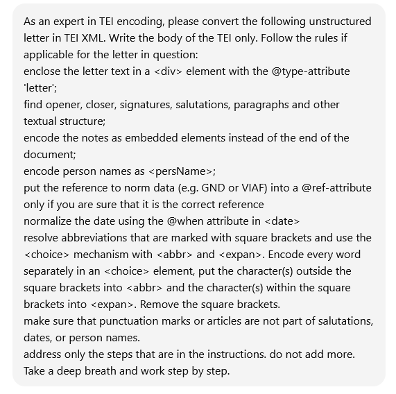
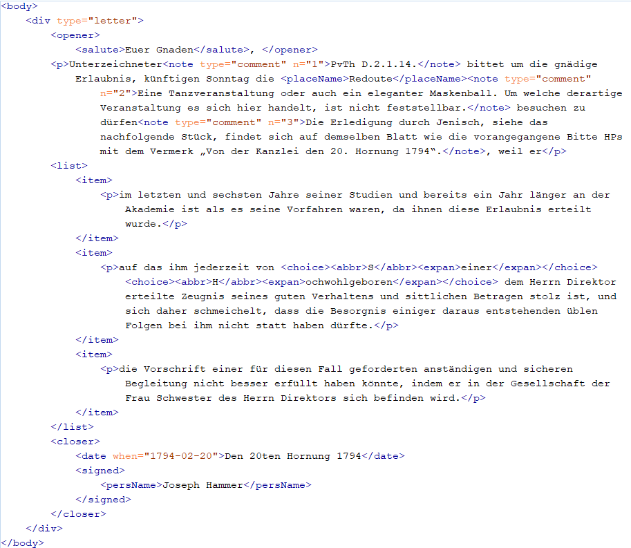
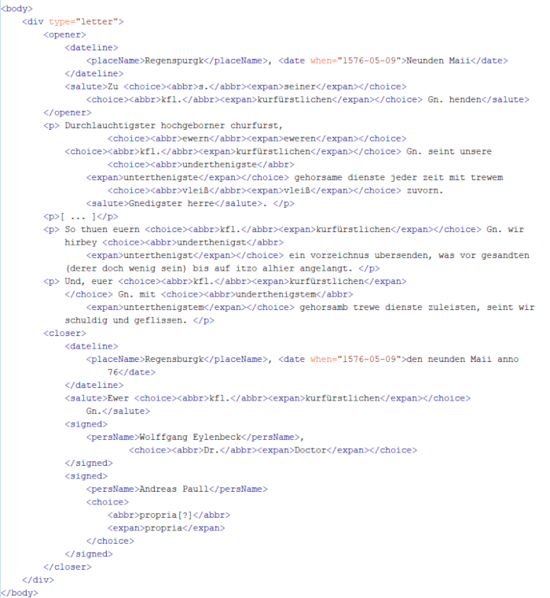
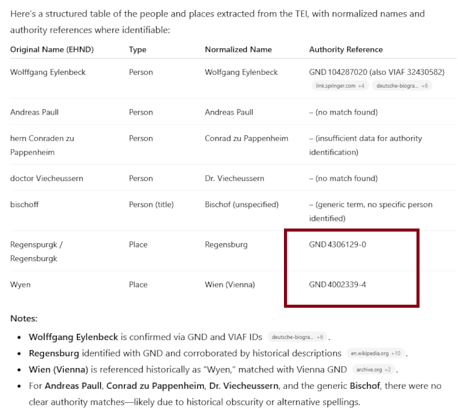
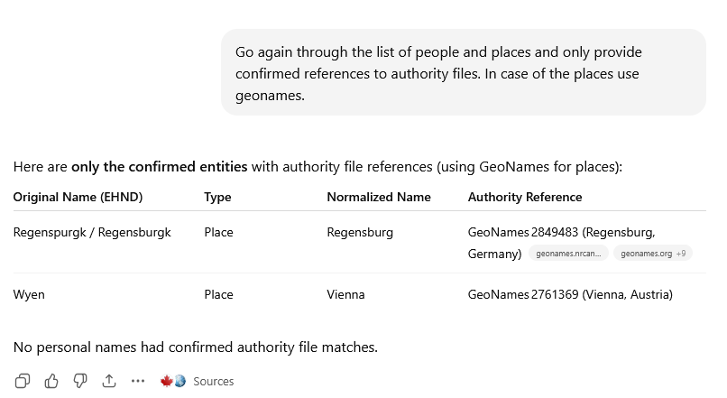

ChatGPT as an assistant for digital scholarly editing
Table of Contents
Abstract
Large language models such as OpenAI’s ChatGPT have rapidly become prominent tools in academic contexts, including digital scholarly editing. Although not originally designed for editorial practice, ChatGPT is increasingly integrated into experimental editorial workflows. This review surveys recent literature on its use in scholarly editing and assesses its potential to support key editorial tasks. Drawing on published case studies and our own experiments, we analyze the benefits and limitations of employing ChatGPT at different stages of creating and analyzing digital editions, including transcription, TEI encoding, and named-entity recognition. The review also addresses significant concerns. As a commercial and largely closed system, ChatGPT operates as a “black box” that allows only indirect control through prompting, which poses challenges for transparency and reproducibility in academic contexts. Issues of model bias, data governance, and ecological impact must be carefully considered when integrating such tools into research workflows. ChatGPT should therefore be adopted cautiously and critically. Nevertheless, its capacity to lower technical barriers and to consolidate tasks that previously required multiple tools and advanced programming skills makes it, or similar AI tools, a potentially valuable assistant in digital editing workflows.
Introduction
In the rapidly evolving landscape of the Digital Humanities, large language models (LLMs)1 have become prominent tools for a multitude of tasks, including text analysis, classification, and language translation. This review examines ChatGPT’s capabilities as an assisting tool for digital scholarly editing tasks. ChatGPT was selected due to its increased media presence and widespread adoption within the humanities community in recent years, including institutional deployments at universities such as the University of Graz, where the authors are based. 2
Introduced by OpenAI in November 2022 (OpenAI 2023), the chatbot ChatGPT is a generative artificial intelligence system that communicates with users primarily through natural-language interaction. It processes user input, known as prompts, to generate natural language output and can be used as an assisting tool by scholars in the process of editing, annotating, and curating (historical) texts. The authors evaluate ChatGPT primarily as users, i.e., as editors working with the web-based graphical user interface, rather than as developers engaging directly with the underlying models or APIs. All experiments were performed using the ChatGPT web interface, specifically the GPT-4o model, accessed between July 2024 and July 2025, using both free and Plus tier access. At the time of writing, ChatGPT is offered in multiple subscription tiers and model variants, each with different capabilities, usage limits, and available tools such as web browsing, image generation, and data analysis. During the revision period for this article, the default models and available features changed notably across tiers, illustrating the platform’s rapid evolution and the time-bound nature of experiments. The source material used derives from (digital) edition projects in which the authors are involved. Given the rapid development of the models and interface features, this review represents a time-bound snapshot rather than a final assessment.
In conceptualizing how generative AI might support scholarly editing, the Institute for Documentology and Scholarly Editing (IDE) has proposed a processing pipeline framework (Pollin et al. 2025). This model distinguishes between source material, edition as data, and edition as publication, connected through intermediate editorial steps. Through digitization, transcription, and annotation, the workflow progresses from raw source materials toward a critical text prepared for publication. The framework further differentiates between structural tasks (e.g., planning, documentation, tool integration, quality control) and operational tasks (e.g., text recognition, entity recognition, normalization, enrichment). This structured approach provides a useful lens for assessing at which stages generative AI tools such as ChatGPT may be usable within editorial workflows, and where their limitations become apparent.
ChatGPT is developed by OpenAI, a company founded in 2015 in San Francisco by a group of machine learning experts, research engineers, and scientists.3 There is a huge interdisciplinary team of developers behind the system: the GPT-4 technical report from 2023 lists 280 co-authors. Financial support is provided by individuals and companies. In an interview with Bill Gates, OpenAI’s CEO, Sam Altman has given an outlook on future developments: The focus will be on multimodality, reasoning ability, reliability, customizability, and personalization (Gates 2024, Chudleigh 2024).
From a tool-identification perspective, ChatGPT is accessed via a web-based interface running in a modern browser. It does not provide a stable version identifier or persistent identifiers for individual interactions. Although conversations can be shared via generated links, these are not designed as durable scholarly references. This lack of stable versioning and citability is a significant usability constraint in digital scholarly editing, where traceability and documentation of editorial decisions are essential.
Methods and Implementation
The technical architecture of ChatGPT relies on generative pre-trained transformer (GPT) models, which are fine-tuned for natural conversation using a combination of supervised learning and reinforcement learning from human feedback. These LLMs belong to the broader class of foundation models, which are designed to support multiple downstream applications within a single system rather than being optimized for a particular, narrowly defined task. Therefore, ChatGPT can in principle be applied to a wide range of tasks at different stages of a digital scholarly editing workflow.
Training Data, Transparency, and Reproducibility
The exact training data of the underlying models is not publicly disclosed, and the models are not freely available. According to OpenAI, training data consists of “information that is publicly available on the internet, information that we license from third parties, and information that our users or our human trainers provide.”4 This is an issue especially in a scholarly context, and ChatGPT has been repeatedly criticized for lacking transparency. Another significant limitation for scholarly work concerns reproducibility. Even if identical prompts and a temperature setting of 0 (intended to reduce randomness) are used, ChatGPT does not reliably produce identical outputs across multiple runs. This is due to the inherent non-deterministic nature of LLMs, which predict token probabilities in context based on the training data (Ouyang et al. 2023). As a result, the same prompt can produce slightly different outputs across multiple runs, even when the underlying model remains unchanged. From the perspective of digital scholarly editing, this lack of strict reproducibility complicates the documentation and verification of editorial decisions.
As of June 2025, free-tier users have, by default, access to GPT-4o, OpenAI’s flagship multimodal model, with a limited number of uses. Once this limit is reached, usage automatically defaults to a smaller, cost-efficient fallback. Core tools, including browsing, file uploads, data analysis, and vision, are available through GPT-4o. Users of the Plus, Pro, and Team tiers benefit from enhanced usage limits and access to a wider range of models through the model selector, including models optimized for complex reasoning tasks, high-performance multimodal interaction, and lightweight, cost-efficient processing. These models can be optimized through prompting for specific applications.
Interaction Model and Prompting
ChatGPT operates in a conversational style, engaging users with dialogue-based exchanges (so-called prompts) that mimic human conversation. Besides text, users can also start their conversations with images and voice. From these diverse starting points, a prompt is essentially a natural language input provided to a model that can vary from simple questions and instructions to complex scenarios, directing the LLM in its response generation. Consequently, prompt engineering is the process of designing, refining, and optimizing prompts to effectively communicate the intentions of users to an LLM. Crafting precise and contextually appropriate prompts is key to improving the accuracy of the model’s responses. Considerations of prompt length and structure are also relevant, as model inputs are processed as tokens and subject to contextual limits. There are various prompting techniques, such as zero-shot, few-shot, and chain-of-thought prompting, each designed to approach the model differently based on the complexity of the task (Saravia 2022). In editorial contexts, careful prompting is essential for achieving consistent results, particularly when tasks involve formalized output formats or domain-specific conventions.
All inputs and outputs processed by ChatGPT are internally segmented into tokens, which constitute the basic unit for both text processing and usage accounting.
Tokens are the building blocks of text that OpenAI models process. They can be as short as a single character or as long as a full word, depending on the language and context. Spaces, punctuation, and partial words all contribute to token counts. This is how the API internally segments your text before generating a response.5
How exactly tokens are calculated is difficult to understand for the average user. OpenAI suggests that “helpful rules of thumb” for English texts are that one token corresponds to approximately four characters, or about three-quarters of a word. Consequently, 100 tokens amount to roughly 75 English words. OpenAI provides an online tokenizer that allows users to test how specific inputs are segmented into tokens.6 While this approximation is already slightly vague, an additional complication is that tokenization is language-dependent. This is especially relevant considering that the objective of digital editions very often involves historical texts in languages other than standard English.
Customization and Configuration
For creating so-called Custom GPTs, no programming knowledge is necessary. The configuration screen allows you to enter a picture, a name of the GPT, a short description, detailed instructions, a conversation starter to facilitate the start of a conversation, and the upload of an extra knowledge base. It is recommended to provide the additional knowledge in a minimalistic format (e.g., JSON or Markdown) to save tokens instead of ‘chatty’ formats like XML, where each tag consumes tokens. Combining a language model’s capabilities with external information retrieval to tackle more complex tasks is known as RAG (Retrieval-Augmented Generation). For small-scale text documents, this is already integrated in the aforementioned Custom GPTs, while larger corpora require interfacing with external databases.7
ChatGPT can be individually configured using ‘custom instructions’ to respond more effectively to prompts. Users may provide details about their activities, personal information, and describe their interests. Additionally, they can specify how ChatGPT should respond, such as choosing a formal or casual tone, neutral or opinionated interactions, and the desired length of responses. This customization means that users do not have to repeat these preferences in each request, thus saving tokens.
Input, Output, and Data Analysis Capabilities
ChatGPT can handle and process text in various data formats like plain text, XML, HTML, JSON, CSV, or Markdown, as well as image, video, and audio as input. Likewise, it can generate output in most textual data formats mentioned; in addition, recent multimodal versions support audio output, while the generation of standalone video files is not natively supported in the standard ChatGPT interface. Advanced data analysis (ADA), integrated into GPT-4-class models, allows the model to generate Python code for performing exploratory data analysis tasks. It processes various structured input formats (e.g., Excel, CSV, PDF, and JSON) and produces corresponding outputs (e.g., Python Code, Visualizations, Charts, and interactive tables).
For developers, OpenAI provides an easy way to use its API via the programming language Python, the Curl command line tool for sending HTTP requests to APIs, and Node.js, a JavaScript framework to build rich applications, provided one has an API key. However, the focus of this article is the chatbot, and we will not explore the API.
Positioning within the LLM landscape
ChatGPT exists within a broader and rapidly evolving ecosystem of generative language models. Proprietary systems include Claude by Anthropic or Gemini by Google, as well as models integrated into platforms like Microsoft Copilot. At the same time, open-source and open-weight models are quickly catching up, or even outperforming them in certain tasks. (Chen et al. 2024) Leading examples include the Llama family (Meta), Mistral AI’s Mistral and Mixtral models, and Alibaba’s Quen series.
When assessing a language model’s openness, it is important to differentiate between ‘open-source models’ and ‘open-weight models’. Open source refers to sharing the full source code, the underlying algorithms, training methods, and data, while open weight models only share the pretrained model parameters, which allows use but limits transparency and control. Open-weight models are easier to use but less transparent, while open-source promotes transparency and allows modification, but also requires more developer effort (Ramlochan 2023). For digital scholarly editing, these distinctions are relevant for sustainability, inspectability, and long-term reuse. The current leading open-source models can be consulted at the Chatbot Arena.8
Examples and Current Uses of Generative AI in Digital Scholarly Editing
The GPT models are generally considered not be trained on specific domains or tasks (though further user-guided fine-tuning can be used to that end). They are general models that can assist in different tasks related to the digital editing pipeline, from data creation to the final publication.
One area of experiments includes custom GPTs, that is, user-configured applications built on top of a pre-trained GPT model. Examples include teiCrafter, an “expert automaton for converting plain text to TEI XML” (Pollin 2023); TEI Scholar (Jankovic); and TEI Lex 0 Converter (Miyagawa). Designing custom GPTs does not involve training a new language model, but rather supplying detailed instructions and additional domain-specific knowledge, ideally in compact data formats such as Markdown or JSON, to reduce token usage. Custom GPTs can be kept for internal use only or shared with the broader community; they remain bound to OpenAI’s infrastructure and do not constitute independent editorial tools.
A workshop at the DHd 2024 conference in Passau, organized by the Institute for Documentology and Scholarly Editing (IDE), provided a broad overview of current experiments with generative language models in digital scholarly editing (Pollin et al. 2024). 10 contributions covered a wide range of editorial tasks, including transcription, OCR cleaning, markup generation, normalization, named entity recognition, annotation, translation, and text summarization. Pollin has shown with his workshop series on generative AI the various areas of its application across DH use-cases: from the transfer of unstructured data to TEI to generating and modeling RDF data to data analysis and visualization (Pollin 2024). Alongside these exploratory applications, recent contributions have also emphasized the need for systematic evaluation, proposing frameworks and metrics for assessing LLM-assisted TEI encoding (Strutz and Vogeler 2025) and the automated handling of editorial interventions (Strutz and Scholger 2025), thereby highlighting both the potential of LLMs for complex, context-sensitive tasks and the methodological challenges that remain.
Application for digital scholarly editing
Conversations with ChatGPT are stored on OpenAI’s servers and can be accessed by users through the history option, which is available in the left sidebar. The conversations can be shared via generated links, allowing limited collaboration or documentation of interactions9. However, due to the non-deterministic nature of the models (discussed in section 1) and the absence of stable versioning, such records do not guarantee reproducibility in a scholarly sense. While non-reproducibility poses challenges for academic rigor, this behavior can also be used by editors as an advantage, namely by generating multiple versions of the same output (e.g., requesting several TEI encodings of a letter) and subsequently critically identifying the optimal encoding approach.
This approach might be viewed as a form of digital hermeneutics, potentially transforming what appears to be a limitation into a tool for deeper interpretive engagement with editorial decisions. ChatGPT can support editors with various tasks during the creation of a digital scholarly edition, ranging from summaries and translations to automated XML/TEI tagging and other NLP tasks. It can also be used as a ‘buddy’ to provide feedback on an existing data model or XML/TEI code. ChatGPT can even assist in writing small programs for the web presentation or data analysis of an edition, utilizing Promptotyping, a prompt engineering method on LLM-based software development.10 From a utility perspective, ChatGPT primarily supports exploratory and preparatory stages of editorial work rather than final, authoritative decisions.
To evaluate ChatGPT’s practical value for concrete editorial tasks, we selected two common editorial tasks: (1) converting plain text into TEI-compliant XML and (2) identifying and classifying named entities. All experiments were performed using GPT-4o in the browser interface. For more elaborate examples, we refer to slides including chat protocols in Pollin 2024.
In the first example, a letter from the digital edition Joseph von Hammer-Purgstall: Korrespondenz (Höflechner 2025) was provided as plain text and should be encoded following the Guidelines of the TEI. The correspondence spans the late eighteenth to mid-nineteenth century and constitutes a multilingual scholarly exchange within the context of Oriental studies. The plain text of the letter was taken from the digital edition Joseph von Hammer-Purgstall: Korrespondenz:
Euer Gnaden,
Unterzeichneter1 bittet um die gnädige Erlaubnis, künftigen Sonntag die Redoute2 besuchen zu dürfen3, weil er
1.) im letzten und sechsten Jahre seiner Studien und bereits ein Jahr länger an der Akademie ist als es seine Vorfahren waren, da ihnen diese Erlaubnis erteilt wurde.
2.) auf das ihm jederzeit von S[einer] H[ochwohlgeboren] dem Herrn Direktor erteilte Zeugnis seines guten Verhaltens und sittlichen Betragen stolz ist, und sich daher schmeichelt, dass die Besorgnis einiger daraus entstehenden üblen Folgen bei ihm nicht statt haben dürfte.
3.) die Vorschrift einer für diesen Fall geforderten anständigen und sicheren Begleitung nicht besser erfüllt haben könnte, indem er in der Gesellschaft der Frau Schwester des Herrn Direktors sich befinden wird.
Den 20ten Hornung 1794
Joseph Hammer
1 PvTh D.2.1.14.
2 Eine Tanzveranstaltung oder auch ein eleganter Maskenball. Um welche derartige Veranstaltung es sich hier handelt, ist nicht feststellbar.
3 Die Erledigung durch Jenisch s. das nachfolgende Stück, findet sich auf demselben Blatt wie die vorangegangene Bitte HPs mit dem Vermerk „Von der Kanzlei den 20. Hornung 1794“.
 
In the second example, the same TEI annotation task was applied to reports of envoys present at the Imperial Diet of Regensburg of 1576. The envoys, Dr. Wolfgang Eulenbeck and Dr. Andreas Paulus, reported regularly to Prince-elector (Kurfürst) August von Sachsen, who was not present at the Imperial Diet. The form and structure of these reports are very similar to the above letter by Hammer-Purgstall. However, the significant difference is that they were written three centuries earlier in Early New High German. The correspondence between the envoys and August von Sachsen is published in the edition Der Reichstag zu Regensburg 1576.11
The following quote shows the plain text of the letter from May 11 1576, to August von Sachsen:
Neunden Maii, Regenspurgk rhäte. Präs. Annaburg, 12. Maii anno 76. Zu s. kfl. Gn. henden.
Durchlauchtigster hochgeborner churfurst, ewern kfl. Gn. seint unsere underthenigste gehorsame dienste jeder zeit mit trewem vleiß zuvorn. Gnedigster herre.
Auf euer kfl. Gn. gnedigsten bevelch und uns zugeschickter instruction haben wir uns aufn wegk nach Regensburgk erhoben, und seint gestern umb acht schlage vor mittage alhier ankommen. Und wiewol wir under wegs verstendigt, als solte die röm. ksl. Mt. auf den vierzehenden tag ditz monats Maii alhie angelangen, so werden wir doch durch des Reichs marschalch alhier berichtet, das sich irer ksl. Mt. aufbruch zu Wyen bis in mitten ermelts monats verweilett, und ire Mt. wenig vor ende desselben alhier ankommen werden, inmassen euer kfl. Gn. aus inligender copey der höchstgedachten ksl. Mt. schreiben an den bischoff [1v] alhier, item hern Conraden zu Pappenheim und doctor Viecheussern gnedigst haben zuersehen.
So thuen euern kfl. Gn. wir hirbey underthenigst ein vorzeichnus ubersenden, was vor gesandten (derer doch wenig sein) bis auf itzo alhier angelangt.
Und, euer kfl. Gn. mit underthenigstem gehorsamb trewe dienste zuleisten, seint wir schuldig und geflissen. Datum Regensburgk, den neunden Maii anno 76.
Ewer kfl. Gn.
underthenigste gehorsame
Wolffgang Eylenbeck, Dr.
Andreas Paull propria[?]

Close observation of the result shows that some text is missing. For
some reason, the part of the opener indicating when the letter was presented to
August von Sachsen: “Präs. Annaburg, 12. Maii anno 76” is missing. Furthermore,
identification and expansion of abbreviations is a challenge. While abbreviations,
such as ‘s.’, ‘Mt.’ and ‘kfl.’ are correctly resolved, others were not even
identified as abbreviations, e.g., ‘Gn.’, or words were incorrectly identified as
abbreviations, e.g., ‘ewern’, ‘bevelch’, ‘instruction’. This can easily be resolved
by providing a list of the abbreviations used in editions of the Imperial Diets.12 Dates are
precisely tagged and correctly normalised using the @when attribute.
However, ChatGPT does not automatically take the Gregorian calendar reform into
consideration. It has to be explicitly mentioned to add @calendar.
 
Usability, sustainability, and maintainability
Generally, ChatGPT can be used via the OpenAI website, and an API is also available for programmatic use. The tool can be used with minimal setup, and the web interface is simplistic and easy to use. It works well on all modern web browsers and devices, and a ChatGPT app is available for mobile devices. Users require internet access and an OpenAI account. Additional services beyond the free tier, including expanded API usage and processing capabilities, are only available under a pay plan based on OpenAI’s token system.13 We do not go into detail about pricing as it depends on the model used; however, it has to be noted that for more complex and longer tasks, it can get very expensive. This makes it less attractive for sustained scholarly work and creates unequal conditions, as not all academics or projects might have the resources to cover the costs. It is also worth noting that access to ChatGPT varies globally.14 In regions where the tool is restricted, such as China, alternatives like DeepSeek and Ernie Bot are available (Wikipedia contributors 2024; Yang 2023). While these tools offer similar functionalities, their effectiveness for digital scholarly editing would require separate evaluation.
The various language models used within ChatGPT, and their differences, are briefly documented and compared on the OpenAI website15. OpenAI also has a help center and maintains a developer forum where, currently, mostly API-related issues are discussed. ChatGPT has a big user community and is widely used. Therefore, if you run into a general problem, the chance is very high that someone else already had a similar problem, and the solution can be found online. OpenAI also provides documentation and guidelines for the use of the tool. For instance, the guidelines for prompt engineering explain strategies and suggestions for crafting effective prompts to get better results from ChatGPT. In addition to the material provided by OpenAI, it has to be pointed out that, due to the great interest and broad application of chatbots in recent years, numerous introductions and documentation about working with ChatGPT were developed by individuals, institutions, and organizations all over the world. This also includes some subject-specific introductions for digital humanities and digital scholarly editing16.
While interacting with ChatGPT is quite easy, creating effective prompts requires some training. Prompt engineering has become its own discipline, and mastering these techniques is particularly important in digital humanities contexts, where specialized terminology, historical language material, and encoding standards require precise instructions (Saravia 2022, Pollin 2024). Well-designed prompts lead to better results and reduce frustration in the use of ChatGPT. It has to be emphasized that the use of ChatGPT is very much experimental in most disciplines, and its full capacities are not yet clear; further study is necessary. This holds especially true for digital humanities and its use for digital scholarly editing.
ChatGPT is not open source. The tool itself and its development are closed off. This means that neither the source code nor the underlying models can be reused or built upon. However, the performance of GPT has been analyzed extensively since its release. Users all over the world from various disciplines have experimented and published benchmark tests and evaluations.17 This lack of openness raises concerns with regard to transparency, sustainability, and long-term reusability in scholarly workflows.
OpenAI assures its users that all data shared with ChatGPT is encrypted, and the input and the output you receive from ChatGPT are rightfully yours.18 Nevertheless, there are concerns that OpenAI uses input data for training purposes and that sensitive information may end up in the company’s database and become available to other users of the tool. Another concern that has been voiced is that OpenAI collects substantial data about its users and their behavior (Merton-McCann 2023).
Finally, the question of citation must be addressed. If ChatGPT is used in research or for academic writing, its involvement needs to be acknowledged. This is also an issue when we want to encourage our students to use it as a tool. Conversations are tightly bound to a user account, and there are no permalinks, no DOI, no URL that allows for persistent sharing. Consequently, referencing ChatGPT is a big issue for students and researchers. There is not yet a general consensus on how to cite ChatGPT conversations.19 However, ChatGPT is usually not considered an author. This also means that ChatGPT – or any AI – cannot claim copyright and any AI-generated output is automatically considered public domain (Scholger 2025). APA, for example, suggests that ‘chats’ with the AI cannot be cited as personal communications as there is no person communicating.20 It is typically recommended to include the prompt or the entire conversation for reference (for instance, in an appendix).21 This reminds us of the recommendations from the early 2000s to print out entire websites and add them to an essay. However, this approach can quickly become unwieldy, resulting in an overwhelming flood of appendices, as conversations with ChatGPT can be quite extensive.
User interaction, accessibility, and bias
ChatGPT is a chatbot, and in this review, we focus on the GUI provided by OpenAI at https://chat.openai.com/. The interface requires a user account and login and is designed primarily for conversational interaction, i.e., asking questions and receiving responses. Details have already been described in previous sections. From a usability perspective, the interface is minimalistic and straightforward, supporting quick access to the core functionality of the tool: the conversation. One gets the impression that OpenAI did not invest too much effort into the design, as their interest and attention are on other aspects. And indeed, critical remarks can be found regarding its simplicity and limited customization options22.
While the customization of the web-based GUI provided by OpenAI is minimal, users are encouraged to use the API to build their own customized applications and workflows. And indeed, the API has been used by numerous companies, institutions, and individuals to integrate language models into existing workflows.23 However, the usage depends very much on a user’s ability to formulate instructions in one of the languages supported by the language model.
ChatGPT is described as a multilingual chatbot that can communicate in over 50 languages.24 It also provides the possibility to translate from one language into another, making it a competitor for Google Translate, DeepL, and similar services.25 Also, the speech-to-text Audio API based on the Wisper model, which is also part of the ChatGPT ecosystem, provides support for many languages. It was trained on 98 languages, but for only about 58 languages, the word error rate is lower than 50%.26
ChatGPT is also frequently discussed in the context of accessibility and the provision of barrier-free content. The OpenAI web interface is simplistic and screen-reader friendly. But the actual benefit comes from the use of the ChatGPT API in various new applications. For instance, the description of images is one such use-case27.
At the end of this examination of ChatGPT’s usability, it is necessary to address the question of bias. Even if we ‘talk’ to a machine, ChatGPT is not objective. The chatbot is trained on an enormous amount of data, most of it from a North American and European context, and the biases introduced through that data influence the response of the language model. Gender, racial, religious, age, or political bias, and other negative behaviors have been correctly criticized in the past.28 If you ask ChatGPT, it will explain to you that it tries to be objective, but it is not free of bias. OpenAI provides a disclaimer about bias and stereotypes in ChatGPT responses on its website. They suggest that users should be careful with generated content, particularly when dealing with culturally sensitive or historically situated material.29 Another aspect that is currently discussed emotionally in politics and the media concerns the ecological dimensions of using AI, especially the increase in power consumption of data centers and companies in the coming years. Sustainability is therefore an important topic that generates more and more attention and forms part of the broader context in which decisions about adopting such tools for scholarly editing are made (Rohde et al. 2024).
Conclusion
ChatGPT is not a tool that was explicitly developed with the digital humanities or the scholarly editing community in mind. Nevertheless, it has a wide range of possible applications for researchers and editors alike and can support different stages of the development or analysis of a digital edition. It can be used to aid with the transcription and data creation process, can help to develop scripts for data processing and analysis, and more.
There is still relatively little research on the use of LLMs for editorial purposes, and the possibilities of what can be done with ChatGPT and similar AI tools are constantly changing. We are aware that the evaluation of such technology is only a snapshot that might not be relevant in a couple of months, and that all predictions for future developments are quite difficult as development moves so quickly. As we outlined in the article, we chose to evaluate ChatGPT (GPT-4o) over other LLMs as it is well-known and currently widely used by humanities scholars.
Several limitations significantly constrain the use of ChatGPT as a tool for scholarly editing. First, the development of the tool is closed off as it is a commercial product. For editors, this results in a black-box situation that can be vaguely controlled using prompts. If prompts are not carefully crafted, the results can be misleading or even totally wrong. Often, negative feedback about ChatGPT is the result of knowing too little about its capabilities and how to create effective prompts. Second, it remains unclear how OpenAI handles the data provided by users and to what extent the data is used to train future models. Therefore, users have been warned to be careful and not to share sensitive or unpublished material with AI. For scholarly editing, this significantly restricts the range of sources for which ChatGPT can be used responsibly. Third, while the chatbot interface is suitable for small-scale experiments and exploratory tasks, complex multi-stage editorial workflows for an entire corpus - from the TEI encoding to the recognition of named entities and their enrichment with norm data - can only be effectively implemented via the API. The associated costs cannot be covered by every project and also contradict the principles of an open-knowledge society and equal access to research. This is why it is so important that we focus more on developments in the area of open-source LLMs in the future. Finally, ethical issues caused by the bias in the models, along with ecological dimensions of using AI, such as high-power consumption, are substantial issues and have to be kept in mind when incorporating these tools into scholarly workflows.
The use cases presented in this review demonstrate ChatGPT’s high potential as an assistant for digital editing. Tasks that previously required several tools and technical expertise can now be performed with comparatively little effort using carefully designed prompting instructions. At the same time, we have also discussed that the quality of the results can diverge depending on the source material of the edition and a user’s ability to craft “good prompts”. In any case, a human editor must remain in the loop to control, evaluate, and, if necessary, further process the output. This is especially highlighted by our little experiment using German texts from two different historical language periods. It shows that ChatGPT works less effectively with historical languages.
Bibliography
- Chen, Hailin, Fangkai Jiao, Xingxuan Li, Chengwei Qin, Mathieu Ravaut, Ruochen Zhao, Caiming Xiong, and Shafiq Joty. 2024. “ChatGPT's One-year Anniversary: Are Open-Source Large Language Models Catching up?” arXiv. https://doi.org/10.48550/arXiv.2311.16989.
- Chiang, Wei-Lin, Lianmin Zheng, Ying Sheng, Lisa Dunlap, Anastasios Angelopoulos, Christopher Chou, Tianle Li, and Siyuan Zhuang. 2024. “Chatbot Arena: An Open Platform for Evaluating LLMs by Human Preference.” arXiv. https://doi.org/10.48550/arXiv.2403.04132.
- Chudleigh, Sarah. 2024. “Alles, was Sie über GPT wissen sollten -5.” https://web.archive.org/web/20250608124031/https://botpress.com/de/blog/everything-you-should-know-about-gpt-5.
- Galka, Selina, and Georg Vogeler. 2026. “Annotating, projecting, and interpreting named entities in digital scholarly editions with LLMs.” International Journal of Digital Humanities. https://doi.org/10.1007/s42803-025-00114-8.
- Gates, Bill. 2024. “Episode 6. Sam Altmann.” In Unconfuse Me with Bill Gates. YouTube video, posted 11.1.2024, https://www.youtube.com/watch?v=PkXELH6Y2lM.
- Höflechner, Walter, Martina Scholger, Alexandra Wagner, Sabrina Strutz, Elisabeth Steiner. 2025. Joseph von Hammer-Purgstall. Korrespondenz. Graz. http://hdl.handle.net/11471/559.20.
- Jankovic, Nikola. “TEI Scholar.” https://web.archive.org/web/20260211110717/https://chatgpt.com/g/g-5yZrEY1A7-tei-scholar.
- Laskar, Md Tahmid Rahman, M Saiful Bari, Mizanur Rahman, Md Amran Hossen Bhuiyan, Shafiq R. Joty, J. Huang. 2023. “A Systematic Study and Comprehensive Evaluation of ChatGPT on Benchmark Datasets”. Annual Meeting of the Association for Computational Linguistics, 29 May 2023. arXiv. https://doi.org/10.48550/arXiv.2305.18486.
- Liu, Jiawei, Chunqiu Steven Xia, Yuyao Wang, Lingming Zhang. 2023. “Is Your Code Generated by ChatGPT Really Correct? Rigorous Evaluation of Large Language Models for Code Generation”. 37th Conference on Neural Information Processing Systems (NeurIPS 2023). arXiv. https://doi.org/10.48550/arXiv.2305.01210.
- Merton-McCann, Alex. 2023. “How To Manage Your Privacy When Using ChatGPT or Other Generative AI.” https://web.archive.org/web/20240804100338/https://www.mcafee.com/blogs/internet-security/chatgpts-impact-on-privacy-and-how-to-protect-yourself/.
- Miyagawa, So. “Lex 0 Converter.” https://chatgpt.com/g/g-kOuPR6Q7u-tei-lex-0-converter?ref=pluginsurf.
- OpenAI. 2023. “GPT-4 Technical Report.” arXiv. https://doi.org/10.48550/arXiv.2303.08774.
- Ouyang, Shuyin, Jie M. Zhang, Mark Harman, and Meng Wang. 2023. “LLM is Like a Box of Chocolates: the Non-determinism of ChatGPT in Code Generation.” arXiv. https://doi.org/10.48550/arXiv.2308.02828.
- PCMAG. 2023. “Google Translate vs. ChatGPT: Which One Is the Best Language Translator?”. PCMAG, June 10, 2023. https://web.archive.org/web/20230610132257/https://www.pcmag.com/news/google-translate-vs-chatgpt-which-one-is-the-best-language-translator.
- Pierazzo, Elena. 2024. “From Digital to Computational Scholarly Editing: Are We Ready for ChatGPT?” https://www.youtube.com/watch?v=4_PtwZiWVz0.
- Pollin, Christopher. 2023. “teiCrafter.” https://web.archive.org/web/20260211112810/https://chatgpt.com/g/g-FEUt7Fq48-teicrafter.
- Pollin, Christopher. 2024ff. “Workshopreihe Angewandte Generative KI in den (digitalen) Geisteswissenschaften.” Zenodo. https://doi.org/10.5281/zenodo.10647754.
- Pollin, Christopher, Martina Scholger, Patrick Sahle, Georg Vogeler, Torsten Schaßan, Stefan Dumont, Franz Fischer, Ulrike Henny-Krahmer, Christiane Fritze, Torsten Roeder, and Alexander Czmiel. 2024. “Workshop Generative KI, LLMs und GPT bei digitalen Editionen.” DHd 2024 Quo Vadis DH (DHd2024), Passau, Deutschland. Zenodo. https://doi.org/10.5281/zenodo.10893761.
- Pollin, Christopher, Franz Fischer, Patrick Sahle, Martina Scholger, and Georg Vogeler. 2025. “When it was 2024 – Generative AI in the Field of Digital Scholarly Editions.” Zeitschrift für digitale Geisteswissenschaften 10. https://doi.org/10.17175/2025_008.
- Quillen, Sam. 2023. “How Many Languages Does ChatGPT Speak?” Medium, Apr 27, 2023. https://web.archive.org/web/20240712110304/https://sjquillen.medium.com/how-many-languages-does-chatgpt-speak-bf5cfc35a586a.
- Ramlochan, Sunil. 2023. “Openness in Language Models: Open Source vs Open Weights vs Restricted Weights.” https://web.archive.org/web/20250314093343/https://promptengineering.org/llm-open-source-vs-open-weights-vs-restricted-weights/.
- Rohde, Friederike, Josephin Wagner, Andreas Meyer, Philipp Reinhard, Marcus Voss, Ulrich Petschow, and Anne Mollen. 2024. “Broadening the perspective for sustainable artificial intelligence: sustainability criteria and indicators for Artificial Intelligence systems.” Current Opinion in Environmental Sustainability 66. https://doi.org/10.1016/j.cosust.2023.101411.
- Saravia, Elvis. 2022ff. “Prompt Engineering Guide.” https://web.archive.org/web/20240316135941/https://github.com/dair-ai/Prompt-Engineering-Guide.
- Scholger, Walter. 2025. “Künstliche Intelligenz im Spannungsfeld von Innovation und Regulierung.” https://doi.org/10.5281/zenodo.15790422.
- Sebastian, Ebin. 2023. “Beyond the Clicks: A Closer Look at ChatGPT’s User Interface Through Heuristic Lenses.” Medium (Nov 22, 2023). https://web.archive.org/web/20240712083258/https://medium.com/@ebinsk000/beyond-the-clicks-a-closer-look-at-chatgpts-user-interface-through-heuristic-lenses-dee5560f9316.
- Strutz, Sabrina, and Georg Vogeler. 2025. “Towards an Evaluation Framework for Assessing Large Language Models in Text Encoding.” ADHO Digital Humanities Conference 2025 (DH 2025). Zenodo. https://doi.org/10.5281/zenodo.16364518.
- Strutz, Sabrina, and Martina Scholger. 2025. “Beyond Rule-Based Processing: LLM-Assisted TEI Encoding of Editorial Interventions in Historical Correspondence.” TEI Annual Conference and Members' Meeting 2025, Jagielloninan University in Kraków. Zenodo. https://doi.org/10.5281/zenodo.17176474.
- Wikipedia contributors. 2024. “ErnieBot.” https://web.archive.org/web/20240712104208/https://en.wikipedia.org/w/index.php?title=Ernie_Bot&oldid=1232272722.
- UNESCO. 2023. “Artificial Intelligence: examples of ethical dilemmas”. https://web.archive.org/web/20240712082302/https://www.unesco.org/en/artificial-intelligence/recommendation-ethics/cases.
- Yang, Zeyi. 2023. “Chinese ChatGPT alternatives just got approved for the general public.” MIT Technology Review (Aug 30, 2023). https://web.archive.org/web/20240712104430/https://www.technologyreview.com/2023/08/30/1078714/chinese-chatgpt-ernie-government-approval/.
Notes
- LLMs are trained with deep-learning algorithms on vast corpora of web pages, books and articles to learn the patterns and structures of language. With multi-billion-parameter architectures, they are able to generate context-aware text. ↑
-
Martina Scholger is a senior scientist at the Department of Digital Humanities at the University of Graz, where she works on digital scholarly editing. Roman Bleier is a postdoctoral researcher at the Department of Digital Humanities of the University of Graz and works in digital scholarly editing projects. Many thanks to Christopher Pollin of DH Craft for reading an early draft of this article and for providing valuable feedback and helpful suggestions, and to Thea Schaaf for proofreading.
↑ - OpenAI 2024, here: https://openai.com/blog/introducing-openai; https://web.archive.org/web/20241007222900/https://openai.com/blog/introducing-openai/. ↑
- OpenAI 2024, here: https://help.openai.com/en/articles/7842364-how-chatgpt-and-our-language-models-are-developed; https://web.archive.org/web/20240913163752/https://help.openai.com/en/articles/7842364-how-chatgpt-and-our-language-models-are-developed. ↑
- OpenAI 2025, here: https://web.archive.org/web/20251012012828/https://help.openai.com/en/articles/4936856-what-are-tokens-and-how-to-count-them. ↑
- https://platform.openai.com/tokenizer; https://web.archive.org/web/20251008185403/https://platform.openai.com/tokenizer/. ↑
- Saravia 2022, here https://www.promptingguide.ai/techniques/rag; https://web.archive.org/web/20250808170700/https://www.promptingguide.ai/techniques/rag. ↑
- An overview of the leading chatbots is given by the ‘Chatbot Arena’ (Chiang et al. 2024), an open platform for evaluating LLMs based on human preference. ↑
- OpenAI 2024, here: https://help.openai.com/en/articles/7925741-chatgpt-shared-links-faq; https://web.archive.org/web/20251118195451/https://help.openai.com/en/articles/7925741-chatgpt-shared-links-faq. ↑
- https://lisa.gerda-henkel-stiftung.de/digitale_geschichte_pollin; https://web.archive.org/web/20260601000000*/https://lisa.gerda-henkel-stiftung.de/digitale_geschichte_pollin. ↑
- D. Berichte und Weisungen: https://gams.uni-graz.at/context:rta1576.ed. ↑
- Such a list is provided by every edition of the Imperial Diets: e.g.https://gams.uni-graz.at/o:rta1576.bt17331b5u. ↑
- OpenAI uses a token system for input, output, and training usage. https://openai.com/pricing. But this constantly changes. ↑
- For a brief period of time in 2023 even in Italy it was banned due to issues with the data protection regulations, DigitalTrends: https://www.digitaltrends.com/computing/these-countries-chatgpt-banned/. See also a recent article (June 2024) about China: https://edition.cnn.com/2024/06/21/tech/apple-ai-chatgpt-ban-china/index.html. ↑
- https://platform.openai.com/docs/models/overview. ↑
- One example is Christopher Pollin’s workshop series"Angewandte Generative KI in den (digitalen) Geisteswissenschaften" - AGKI, https://chpollin.github.io/GM-DH/. ↑
- For instance, the ability of ChatGPT 3.5 and GPT 4 to write correct code was conducted by Liu et al. 2023 and a test on various NLP tasks was conducted by Laskar et al. 2023. ↑
- https://openai.com/enterprise-privacy/. ↑
- As an example we provide here the recommendation by the University of Graz, last update 24.06.2024: https://lehren-und-lernen-mit-ki.uni-graz.at/de/ki-nutzung-kennzeichnen/. ↑
- ‘Unfortunately, the results of a ChatGPT “chat” are not retrievable by other readers, and although nonretrievable data or quotations in APA Style papers are usually cited as personal communications, with ChatGPT-generated text there is no person communicating.’ https://apastyle.apa.org/blog/how-to-cite-chatgpt. ↑
- https://apastyle.apa.org/blog/how-to-cite-chatgpt; APA policy on the use of generative artificial intelligence (AI) in scholarly materials, in: APA Publishing Policies (Aug. 2023): https://www.apa.org/pubs/journals/resources/publishing-policies?tab=3. ↑
- For instance, Sebastian 2023. ↑
- For instance, in a recent article, Galka and Vogeler compared the integration of different LLMs into a workflow for adding NER annotations (2026). ↑
- The chatbot and its user interface are constantly evolving and updated, but that is the situation in July 2024. OpenAI: How to use ChatGPT in a language other than English (alpha), https://help.openai.com/en/articles/8357869-how-to-use-chatgpt-in-a-language-other-than-english-alpha. ↑
- See, for instance, Quillen 2023; PCMAG 2023. ↑
- OpenAI: Speech to text: https://platform.openai.com/docs/guides/speech-to-text; https://platform.openai.com/docs/guides/speech-to-text/supported-languages. ↑
- https://netzpolitik.org/2023/gpt-4-das-naechste-grosse-ding-fuer-digitale-zugaenglichkeit/. ↑
- See for instance examples on the UNESCO website (UNESCO 2023); on the matter see also the end of the keynote lecture by Pierazzo (2024). ↑
- OpenAI: Is ChatGPT biased?, https://help.openai.com/en/articles/8313359-is-chatgpt-biased. ↑
@article{chatgpt,
author = {Scholger, Martina and Bleier, Roman},
title = {ChatGPT as an assistant for digital scholarly editing},
journal = {RIDE – A review journal for digital editions and resources},
number = {19},
year = {2026},
doi = {10.18716/ride.a.19.4},
url = {https://doi.org/10.18716/ride.a.19.4},
}TY - JOUR
AU - Scholger, Martina
AU - Bleier, Roman
TI - ChatGPT as an assistant for digital scholarly editing
T2 - RIDE – A review journal for digital editions and resources
IS - 19
PY - 2026
DA - 2026/03
DO - 10.18716/ride.a.19.4
UR - https://doi.org/10.18716/ride.a.19.4
PB - Institut für Dokumentologie und Editorik e.V.
LA - en
ER - Scholger, M., & Bleier, R. (2026). ChatGPT as an assistant for digital scholarly editing. RIDE – A review journal for digital editions and resources, (19). https://doi.org/10.18716/ride.a.19.4Scholger, Martina, and Roman Bleier. "ChatGPT as an assistant for digital scholarly editing." RIDE – A review journal for digital editions and resources, no. 19, 2026. https://doi.org/10.18716/ride.a.19.4.Scholger, Martina, and Roman Bleier. "ChatGPT as an assistant for digital scholarly editing." RIDE – A review journal for digital editions and resources, no. 19 (2026). https://doi.org/10.18716/ride.a.19.4.